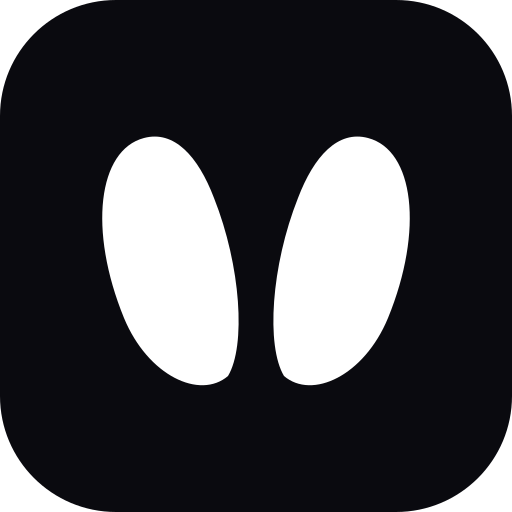
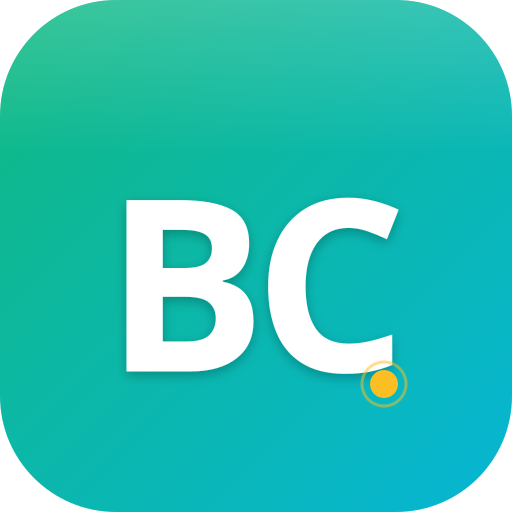
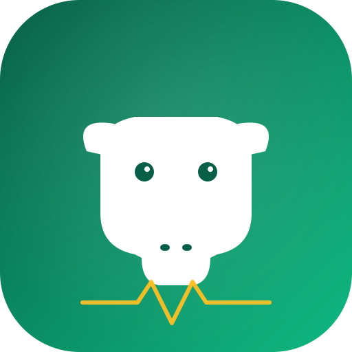
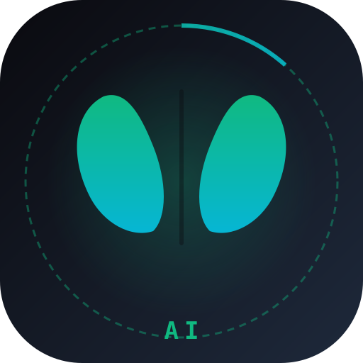

Compara, decide. La D (Vercel-style) está ahora aplicada como oficial · 22 may 2026

✓ OFICIAL ACTIVO · Opción D
Geometría pura monocroma, sin gradient, sin texto. Pezuña bovina abstraída (símbolo podológico literal). Reconocible al instante, escala perfectamente, look tech moderno.
Alternativas descartadas (mantengo SVGs por si cambias de opinión):
Opción A
"BC" + gradient + accent. Estilo Linear / Vercel / startup tech. La más versátil y legible a tamaños pequeños.

Multi-resolución
En tu launcher Android
Opción B
Silueta geométrica de vaca con cuernos + onda de pulso vital. Temático veterinario, reconocible al instante.

Multi-resolución
En tu launcher Android
Opción C
Huella de pezuña (símbolo clínico podológico, EXACTO al tema cojera) + anillo AI. Dark, profesional, único.

Multi-resolución
En tu launcher Android
Avisa al asistente cuál te gusta (A · B · C) — la promociono a oficial + regenero PNGs + actualizo APK